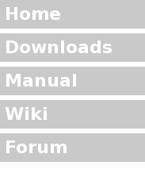
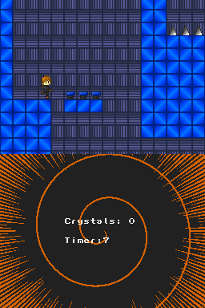

|
 |
Welcome to the home of PAlib.
PAlib, "Programmer's Arsenal", is an easy-to-use development library and toolset for the Nintendo DS that builds off of libnds,
providing useful high-level functions that considerably speed application development.
The last PAlib version is 140823RE. Note: This website was extracted by AerGlass and it is not so official. This aims to provide a website to the PAlib and mdPAlib proyects. There's no maintainer currently. Feel free to be the new maintainer but first talk to "aerglass" on Discord which was the last PAlib maintainer to understand the many risks of being a PAlib maintainer, most notably, going insane. If you still want to procced with such stupidity then go ahead. The current host of the site is GitHub. This site was designed by MLucanius. |
MADE WITH PALIB:
 Darnell Crystal Fever by aerglass |